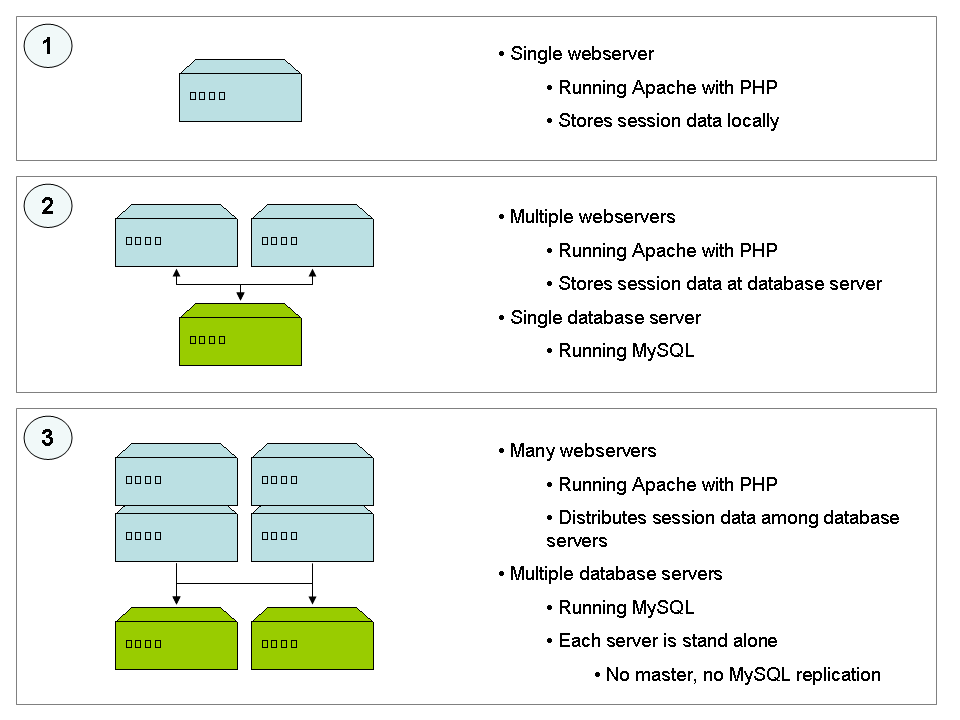

The PHP Distributed Session Manager Class provides a simple but scalable solution
for managing session data in a large cluster.

1. Standard PHP sessions on a single webserver
2. Sessions stored on a central database server (single point of failure)
3. Sessions distributed among many database servers using the Distributed Session Manager Class
The algorithm behind the class is inspired by a Distributed Hash Table (DHT). The class loads a list of Session Stores (each running a stand-alone instance of MySQL). It then seeds PHP's pseudo randomizer with the CRC32 hash of the session ID and 'randomly' shuffles the list of Session Stores. Because PHP's randomizer isn't random, but pseudo random, it produces the same 'random' order every time for the same seed.
$stores = array( 'store1', 'store2', 'store3', 'store4' );
srand( crc32( $session_id ) );
shuffle( $stores );
Reading session data
The Session Manager class attempts to connect to each of the Session Stores in order until a connection has been established
succesfully. It then fetches the session's data from that Session Store and returns it to the script.
Writing session data
The Session Manager class attempts to connect to each of the Session Stores in order. If a connection has been succesfully established,
it writes the data to the connected Session Store. This process is repeated until NUM_COPIES is met.
The PHP Distributed Session Manager Class is developed by Robin Schuil (r.schuil@gmail.com).
All code is released under the GNU GPL licence and were published on the 12 July 2006.
Click here to download the PHP Distributed Session Manager class source code. Enjoy!